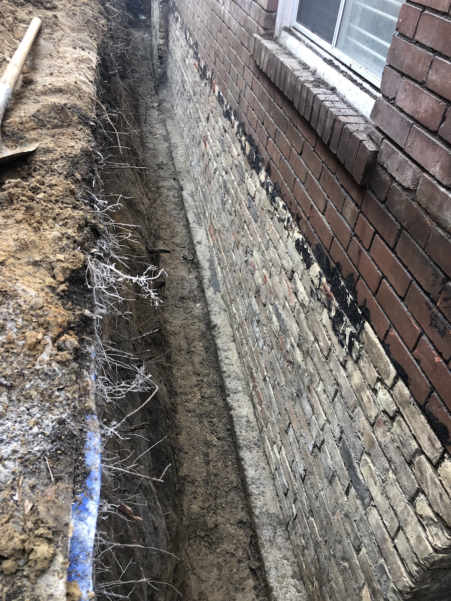
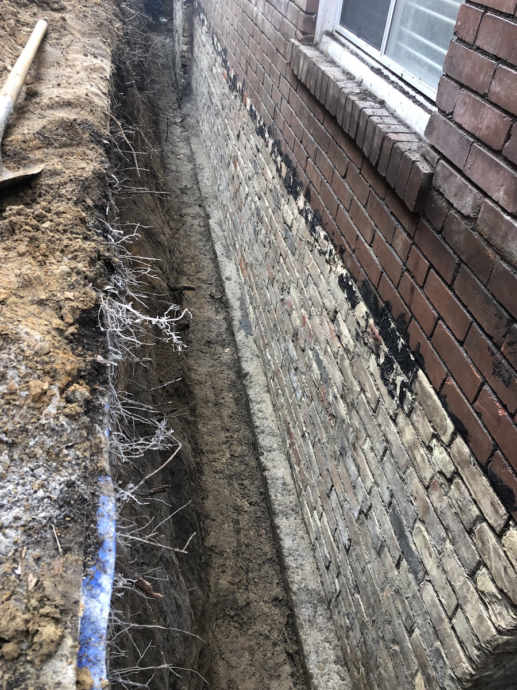

While many companies do waterproofing , Ex-Scape ensures a quality cut above the rest. It starts with our focus on saftey. Our decades of excavation experience enables us to guage soil conditions on the spot, determine trench widths & setbacks , and whether or not bracing is necessary. Furthermore , we are set apart by our relentless effort to scrub the foundation wall thouroughly, regardless of material. This ensures the product application sticks properly and lasts .

We parge every type of wall ( Block , Brick , Field Stone , or other ) . In some concrete-foundation cases , we will only chip or grind cracks and fill with hydraulic cemenet. However , this is only done if the tie back holes and the horizontal joint between the wall and footings are completely sound .
After the masonry repairs and patching are complete , we apply Aquabloc or foundation coating depending on the situation . Finally, we then install the standard drainage membrane , new 4" perforated weeping tile , and 3/4" clear gravel for drainage . Backfill and compacting are always included . We are proud to have a one-hundred percent success rate with our waterproofing work .

 
